教材第 79 页
查看原书页面17、18世纪，资产阶级革命的时代来临。在欧洲，英国资产阶级革命为资本主义制度的确立开辟了道路；法国大革命摧毁了封建统治，资产阶级开始掌握政权。北美的英属殖民地人民，在反抗英国殖民当局统治的过程中，建立了美利坚合众国。美国独立战争既是一次民族解放战争，也是一场资产阶级革命，对法国大革命和拉丁美洲的独立运动产生了深远的影响。
UNIT 06
本单元包含 3 课，正文与课后活动按教材原顺序编排，并保留对应全部原书页面。
单元导语
17、18世纪，资产阶级革命的时代来临。在欧洲，英国资产阶级革命为资本主义制度的确立开辟了道路；法国大革命摧毁了封建统治，资产阶级开始掌握政权。北美的英属殖民地人民，在反抗英国殖民当局统治的过程中，建立了美利坚合众国。美国独立战争既是一次民族解放战争，也是一场资产阶级革命，对法国大革命和拉丁美洲的独立运动产生了深远的影响。
第 17 课
17世纪前期，英国仍然是一个较小的农业国，全国人口只有四五百万。然而，就是这样一个国家，在17世纪却以崭新的面貌出现在世界舞台上。在17世纪的英国，究竟发生了什么事情？
17世纪初，英国开始了斯图亚特王朝的统治。国王詹姆士一世来自苏格兰，狂热地推崇“君权神授”理论，渴望王权专断。他认为，王权是上帝所赐，国王是上帝派到人间的统治者，神圣不可侵犯。他不经议会批准，强行征税，使议会与王权处于对立状态。詹姆士一世的言行与英国的法律和政治传统严重不符。英格兰曾在1215年颁布《大宪章》，维护教俗贵族的特权，规定没有经过协商，国王无权征税，逐渐确立了“王权有限”和“王在法下”的基本原则。13世纪末，英格兰基本确立议会制度。议会由上下两院构成，上院由贵族组成，下院由骑士和平民代表组成，征税权掌握在议会手中。
16世纪伊丽莎白一世主持议会
詹姆士一世本为苏格兰国王，英格兰女王伊丽莎白一世死后无嗣，他作为女王的表外孙继承了王位，成为苏格兰和英格兰的共主。但两个王国并没有合二为一，它们相互独立，宗教、政治、法律、文化传统存在着显著的差异。詹姆士一世倒行逆施，推崇“君权神授”理论，不得人心。詹姆士一世被嘲讽为“基督教世界最聪明的大傻瓜”。
詹姆士一世（1603—1625年在位）
继詹姆士一世之后，查理一世继续推行君主专断政策，无视议会的权力。 1628年，议会向国王呈递了一份《权利请愿书》，重申查理一世在没有得到议会同意的情况下，不得征税；不经法院判决不能随意逮捕人；和平时期不能随意在居民家中驻军。这份请愿书表达了议会限制王权的意图。查理一世先是假意应允，在得到拨款后却解散了议会，议会和王权的矛盾激化。 1640年，议会重新召开，议员们不断抨击国王专权，揭开了英国资产阶级革命的序幕。查理一世恼羞成怒，派军队闯入议会，企图逮捕反对他的议员，挑起了内战。经过几年的反复斗争，议会军队打败国王军队。1649年，查理一世被推上断头台。随后，英国宣布为共和国。然而，共和国的权力却落在了以克伦威尔为首的军队手中，议会有名无实。议会尊克伦威尔为“护国主”，克伦威尔独揽大权。革命废除了君主制，却没有终结个人专权的统治。
1651年的议会大印章表现了共和国议会开会时的场景
克伦威尔（1599—1658）在内战中成为议会军的统帅，为打败王军立下赫赫战功，有很高的声望，内战结束后自然掌握了共和国的最高权力，但他同样凌驾于议会之上。 1658年，克伦威尔去世，军官们争权夺势，政局动荡不安。新贵族和资产阶级决定恢复斯图亚特王朝，但要求以承认议会的权力为条件。
1660年，查理一世的儿子查理二世接受议会有条件的邀请，做了英国国王。英国恢复了君主制，但国王的权
姆士二世。詹姆士二世是天主教徒，他在英国恢复天主教和专制制度，进行反攻倒算，激起了人民的反抗。
随着资本主义和民族国家的发展，16世纪，欧洲出现宗教改革运动，一部分国家和地区的教会脱离罗马教廷，分离出来。原教会称为“旧教”或“天主教”，改革后的教会称为“基督新教”。新教分为许多教派。在宗教改革中，英国也建立起独立于罗马教廷的教会，属于基督新教的一支。
1688年，英国发生政变，议会作出决定：废黜詹姆士二世，迎请他的女儿玛丽和女婿威廉入主英国，这次政变史称“光荣革命”。1689年，议会通过了《权利法案》，重申英国人“自古就有的权利”，如议会定期召开、议员享有讨论国事和言论自由的权利、征税权属于议会、国民可以自由请愿等。《权利法案》规定，国王不经议会许可，不能随意废除法律，也不能停止法律的执行，不得征收捐税。议会还规定，今后任何天主教徒都不能担任英国国王，英国国王也不能与天主教徒结婚。威廉夫妇接受了《权利法案》和议会的要求。此后，英国议会的权力日益超过国王，君主立宪制逐渐形成。英国资产阶级革命推翻了封建君主专制，为英国的资本主义发展开辟了道路，并对世界近代历史的发展
威廉和玛丽加冕
产生了重要的影响。
1.凡未经议会同意，以国王权威停止法律或停止法律实施之僭越权力，为非法权力。 ………… 4.凡未经议会准许，借口国王特权，为国王而征收，或供国王使用而征收金钱，超出议会准许之时限或方式者，皆为非法。 5.向国王请愿，乃臣民之权利，一切对此项请愿之判罪或控告，皆为非法。 6.除经议会同意外，平时在本王国内征募或维持常备军，皆属违法。 ………… 9.议会内之演说自由、辩论或议事之自由，不应在议会以外之任何法院或任何地方，受到弹劾或讯问。阅读上述《权利法案》条款，思考《权利法案》是如何限制王权的。
君主立宪制
君主立宪制又称“议会君主制”，在这种政治体制下，议会行使国家最高权力，君主是国家权力的象征。经历了长期的探索和尝试之后，英国选择了保留王权形式的资产阶级代议政体，即君主立宪政体。1689年，英国议会通过《权利法案》，为限制王权提供了法律保障。1701年，英国议会通过《王位继承法》，把王位继承用议会立法固定下来。这部法律进一步限制王权，保证资产阶级的自由和权利。 18世纪，随着内阁制度的逐步确立，英国的代议制度建立起来，进一步完善了君主立宪制。
第 18 课
美国的历史只有200多年，但是这个年轻的国家成长很快。美国是怎样建立的？美国为什么也使用英语？它建立后实行什么样的制度？
从17世纪开始，英国先后在北美建立起13个殖民地。英国和欧洲其他国家的移民来到北美，促进了当地经济的发展。英国国王和贵族把北美看作英国的原料产地和销售商品的市场，英国殖民者驱赶当地的印第安人，剥削欧洲移民和从非洲贩来的黑奴。1765年以后，英国政府在北美殖民地颁布了一系列新税法，激化了北美人民与英国殖民者之间的矛盾。1773年，英国政府授权东印度公司垄断北美的茶叶贸易，引发了新的抗税浪潮。 1775年4月19日凌晨，800名开赴波士顿西北郊搜查军火的英军，在来克星顿与埋伏在那里的武装村民交火，美国独立战争爆发。
1756—1763年，英国与法国为了争夺在北美的殖民地进行了7年的战争。为了转嫁因战争导致的巨大财政亏空，英国在北美殖民地颁布了一系列税法，但遭到抵制。在抗税斗争中，暴力事件屡屡发生，各殖民地的议会发挥了组织和动员作用。1773年12月16日，一些波士顿市民乔装成印第安人登上东印度公司的商船，把300多箱茶叶抛入大海。倾茶事件发生后，英国当局认为波士顿是反叛中心，颁布了高压法令，关闭波士顿港口，派军队进驻该市，禁止市民集会。
波士顿倾茶事件
来克星顿的枪声激发了北美殖民地人民的抵抗热情，各地人民纷纷组织起来，武装支援波士顿。 1775年5月，北美13个殖民地的代表聚集费城，召开了第二届大陆会议。①会上，华盛顿强烈主张武力反抗英军。会议一致决定把民兵整编为大陆军，委任华盛顿为总司令。与此同时，北美人民要求独立的呼声越来越高。
独立战争时期，许多地方的青壮年男子都参加了抵抗英军的战斗。每当英军将至，他们就拿起武器走出家门，进行武装抵抗；击退英军后，他们就回家从事农业和工商业劳动。例如，在来克星顿，小镇里的人称自己是“一分钟人”，因为他们可以随时转换自己的身份。在独立战争时期，美国各地都有大批类似这种“一分钟人”的民兵，他们是赢得战争胜利的主力军。
乔治·华盛顿是弗吉尼亚州一位种植园主的儿子，早年在军队担任过指挥官。美国独立战争爆发后，他努力将各州团结、联系起来，坚持不懈地对英作战，最终赢得了美国的独立。 1789年，他当选美国第一任总统。美国首都华盛顿是以他的名字命名的。
1776年7月4日，大陆会议通过了由杰斐逊起草的《独立
乔治·华盛顿（1732—1799）
宣言》，宣布人人生而平等，享有生命权、自由权和追求幸福
① 1774年9月5日，北美殖民地代表在费城召开了殖民地联合会议，史称“第一届大陆会议”。
的权利。宣言列举了英国殖民统治的种种暴政，号召殖民地人民反对英国的殖民统治，宣告北美13个殖民地脱离英国而独立。《独立宣言》是第一个以国家名义明确表述资产阶级政治要求的纲领性文献，被称为“第一个人权宣言”。但是，宣言没有宣布废除奴隶制，事实上，天赋人权的享有
签署《独立宣言》时的场景
者不包括黑人和印第安人。
人人生而平等，他们都从他们的“造物主”那边被赋予了某些不可转让的权利，其中包括生命权、自由权和追求幸福的权利。为了保障这些权利，所以才在人们中间成立政府。而政府的正当权力，系得自被统治者的同意。如果遇有任何一种形式的政府变成是损害这些目的的，那么，人民就有权利来改变它或废除它，以建立新的政府。 —《独立宣言》
《独立宣言》发表后，大
《独立宣言》体现了北美民众的哪些诉求？
陆军与英军的战争仍在进行。法国支持美国独立。1777年，
加拿大
一支6 000余人的英军在萨拉
（英）
托加陷入大陆军的包围，被迫投降。萨拉托加大捷是独立
路
战争的转折点。之后，法国承
易
萨拉托加波士顿来克星顿
认美国，公开参战。欧洲很多
密
斯
国家也因与英国的矛盾结成了
费城
新泽西
大
西
安
“武装中立同盟”，英国陷入孤
约克镇
西
立。1781年，美法联军在约克
那（西）
镇与英军激战，英将康华利率
比
1763年英王禁止向西占地界线1775年北美13个殖民地分界线
部下投降。1783年，英国被迫
西
河
英军行动路线美军进军路线法援军路线
承认美国独立。美国独立战争
美法联军进军路线
既是一次民族解放战争，也是
洋墨西哥湾
1783年条约议定的美国国界
一场资产阶级革命。美国独立战争形势图
《独立宣言》发表后，各州先后制定了州宪法。美国建立后，各州各行其是，矛盾重重，代表国家的中央政府软弱无力。1787年，各州派出代表齐聚费城，由华盛顿主持召开了制宪会议，经过争论和妥协，最终制定出美国宪法。宪法依据分权制衡原则设计了一个联邦制共和国：行政、立法、司法三权分立，总统、国会与最高法院及其相关机构各司其职，相互制衡；联邦政府与地方政府分享权力；总统和议员由选举产生。1787年美国宪法是世界上第一部资产阶级成文宪法，对后来许多国家的政治变革产生了重要影响。但是，1787年美国宪法也有很多不足之处，如允许奴隶制的存在，不承认妇女、黑人和印第安人具有和白人男子相等的政治权利。
查找资料，了解北美殖民地的教育情况，分析北美殖民地民众的受教育情况与美国独立及其1787年宪法的产生和执行有何关系。
约克镇战役
1781年，英军司令康华利率领英军北上，占领弗吉尼亚的约克镇。约克镇易受海、陆两方面的进攻。华盛顿利用康华利的策略失误，联合法国从海、陆围攻英军。华盛顿亲自率领美、法联军在约克镇与英军展开决战，法国海军也击败了前来救援的英国舰队，切断了英军的海上补给线和退路。10月19日，走投无路的康华利不得不率领英军投降。约克镇战役之后，英国被迫同意议和。
第 19 课
18世纪的法国，社会矛盾已十分尖锐。法国发生的大革命影响了整个欧洲。这场革命爆发的原因是什么？拿破仑何以在大革命的暴风雨中崛起？
18世纪开始，法国封建制度日益腐朽没落。国王路易十五实施的加重税收等措施阻碍了资本主义的发展。进步思想家猛烈抨击法国的封建制度，称之为“旧制度”。他们著书立说，宣传自由、平等和民主，反对专制，提倡对民众进行启蒙教育，用理性之光驱散愚昧的黑暗。这场以法国为中心，波及欧洲其他国家的反对旧制度的思想文化运动被称为“启蒙运动”。启蒙运动是一场伟大的思想解放运动，为法国大革命作了重要的理论准备。
法语“启蒙”的意思是“光明”，思想家们借用它代指智慧和理性。启蒙运动的主要参与者是知识分子，法国是运动的中心，涌现出许多启蒙思想家。伏尔泰被视为启蒙运动的旗手，他推崇英国的政治制度。孟德斯鸠是最博学的启蒙学者，他提倡分权制衡的政治模式。卢梭则主张最大限度地让公民直接参与国家管理。
旧制度对经济发展的制约，致使法国各种社会矛盾激化。支持美国独立战争使法国政府债台高筑，财政危机更加严重。为此，国王路易十六不得不于1789年5月召开三级会议，讨论征税的问题。
法国社会分为三个等级：教士属于第一等级，掌握着精神权力，享有免税权，不受世俗法庭审判；贵族属于第二等级，也有免税特权；余下的大多数法国人属于第三等级。三级会议由这三个等级分别推举代表组成。通常三级会议最重要的议题是税收，即当国王要征税时，才召集三级会议。因此，会议是不定期的。1789年会议召开前，法国已经有长达175年的时间没有召开过三级会议了。
按照原来的方式，三级会议分三个等级分别开会，每个等级，都只有一票表决权。在这次会议中，第三等级坚决要求增加自身的政治权利，主张三个等级合并开会，实行一人一票的表决制度。此后，第三等级的代表自行成立“国民议会”，作为民众的唯一代表，提出制定宪法的要求。国王被迫让步，一方面同意国民议会改名为“制宪议会”，要求第一等级和第二等级的代表都加入；另一方面却暗中
调集军队，企图以武力控制局面。消息传开，巴黎民众不断聚集并武装起来，支持制宪议会。 7月14日，巴黎民众以死伤近百人的代价，攻占了象征国王统治的巴士底狱，由此引发了全国城乡的暴动。法国大革命开始了。
攻占巴士底狱
法国大革命开始后，制宪议会通过了多项法令，废除了种种贵族特权和封建地租。1789年8月，制宪议会通过了《人权宣言》，宣告了人权、法治、自由、分权、平等和保护私有财产等基本原则。 1791年，制宪议会制定了宪法，废除了旧制度，确立了新制度的基本框架。
法律是公共意志的表现。全国公民都有权亲身或经由其代表去参与法律的制定。法律对于所有的人，无论是施行保护或处罚都是一样的。在法律面前，所有的公民都是平等的，故他们都能平等地按其能力担任一切官职、公共职位和职务，除德行和才能上的差别外，不得有其他差别。 —《人权宣言》
结合材料，谈谈《人权宣言》的历史进步性。
1791年宪法把《人权宣言》作为宪法的组成部分并置于正文之前，宪法基本落实了宣言的原则，但并不完全一致。例如宣言宣告，在权利方面，人们生来是而且始终是平等的，但宪法却把公民划分为“积极公民”和“消极公民”两种。
国王路易十六被迫接受宪法，但暗地里致信欧洲各国君主，呼吁他们武装干涉法国。奥地利和普鲁士组成联军，进逼巴黎。法国各地人民拿起武器，组织义勇军救援巴黎。法国军队在瓦尔密击退侵略者，将敌人赶出国境。1792年9月，法国宣布废除君主制，成立法兰西第一共和国。国王呼吁外国君主军事干预的信件随即被发现，巴黎民众强烈要求惩办国王。1793年，国王路易十六以叛国罪被送上断头台。法国大革命使欧洲各国君主深受震动，他们害怕革命传播，决定
路易十六被处死
绞杀法国的革命。英、荷、西与普、奥等国结成反法联盟，从几个方向进攻法国。法国国内的保王党势力乘机抬头，妄图复辟。在异常严峻的形势下，以罗伯斯庇尔为首的雅各宾派组成了救国委员会，采取一系列严厉措施，平息了国内叛乱，打退了反法联军，把法国大革命推向高潮。但是，雅各宾派的打击面过宽，搞得人人自危，结果罗伯斯庇尔等人也在政变中被送上断头台。不久，新的反法联军又卷土重来。
法国大革命摧毁了法国的君主统治，传播了资产阶级自由民主思想，具有世界性影响。
当时的法国需要一个强有力的政
权。1799年11月，拿破仑·波拿巴发动政变，组成了一个新的政府，很快建立起一套高效率的国家机器。他十分重视改善财政和发展经济，大力发展工商业和农业。为了整理革命以来的立法成果，拿破仑主持制定了民法典，名为《拿破仑法典》①，体现了自由平等和私有财产神圣不可侵犯等原则。这部法典于1804年颁布实施，此后经过多次修改，今天仍然在法国施行。后来，很多国家的民法都以《拿破仑法典》为参照蓝本。
拿破仑·波拿巴出身于地中海科西嘉岛的一个贵族家庭，从小在军校接受教育，毕业后成为炮兵少尉。拿破仑在反对保王党的战争中战功卓著，26岁时被任命为共和国军司令，后来又远征埃及。1799年，远征在外的拿破仑秘密回国，发动了政变。 1804年，拿破仑称帝。1814年，拿破仑战败退位后，被流放到意大利海岸附近的厄尔巴小岛，次年返回巴黎复位。反法联军再次集结，在比利时的滑铁卢大败拿破仑。拿破仑被囚禁在大西洋中的圣赫勒拿岛，终老余生。
在战场上，拿破仑再次大败反法联盟，他的个人威望也达到了顶点。1804年，经公民投票，法国改为帝国，史称“法兰西第一帝国”，拿破仑加冕称帝。
拿破仑·波拿巴（1769—1821）
①《拿破仑法典》，又称《法国民法典》。
拿破仑虽然当上皇帝，但在欧洲君主眼中，他仍然是革命的后继者。反法联盟一次次与法国较量，一次次败在拿破仑手下。拿破仑大军所向披靡，几乎横扫欧洲大陆，在废除各地封建特权的同时，也对当地人民进行压榨和掠夺。 1812年，拿破仑远征俄国，大败而归。1815年，
1812年的拿破仑帝国示意图
法兰西第一帝国覆灭。
1. 制作法国大革命大事年表。
《马赛曲》
1792年4月，法国斯特拉斯堡的工兵上尉鲁日·德·李尔满怀爱
把法国大革命中，1789年、1791年、1793年、1799年发生的大事制成年表。
国热情，写了一首鼓舞人民斗志的歌曲《莱茵军团战歌》。两个月以
2. 讨论：为什么欧洲的国王们害怕法国大革命？
后，普鲁士、奥地利联军攻入法国，法国各地纷纷招募新兵，开赴巴黎，抗击外敌入侵。在法国最南端的城市马赛，也迅速组织起一支500人的结盟军向巴黎进发，一个叫米勒的医科大学生把他得到的《莱茵军团战歌》推荐给马赛军。这首歌激越高昂，马赛结盟军一路高唱着这首革命歌曲开往巴黎。很快，这首歌就传遍了巴黎的大街小巷。后来，这首歌改名为《马赛曲》。1795年，《马赛曲》被确立为法国国歌。
《马赛曲》的歌片
SOURCE PAGES
按单元导语和课次分组展示。本区域保留本单元全部教材页面、插图、地图、照片和版面信息。
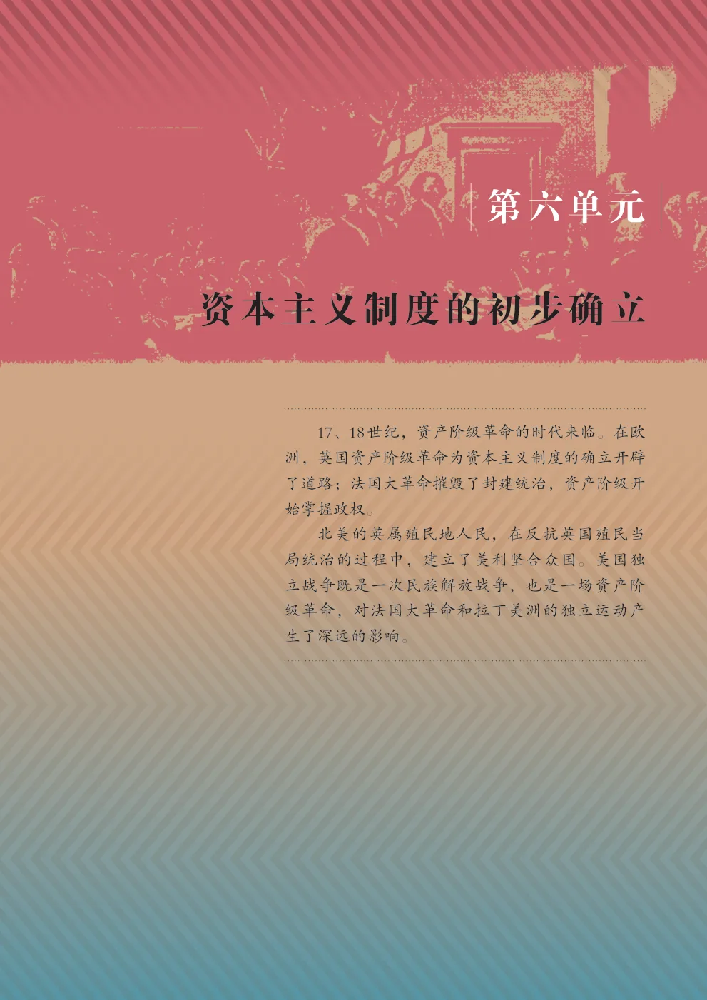
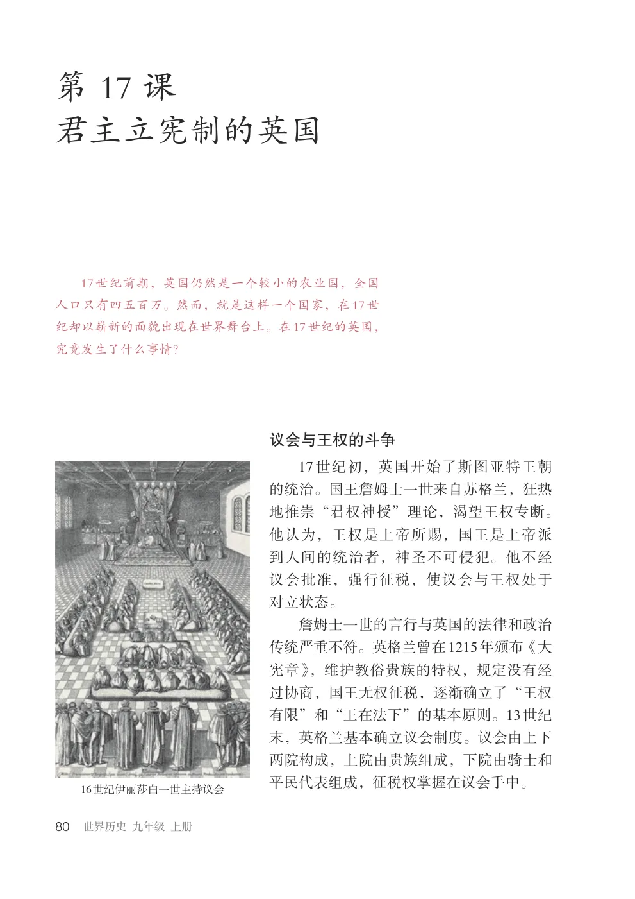
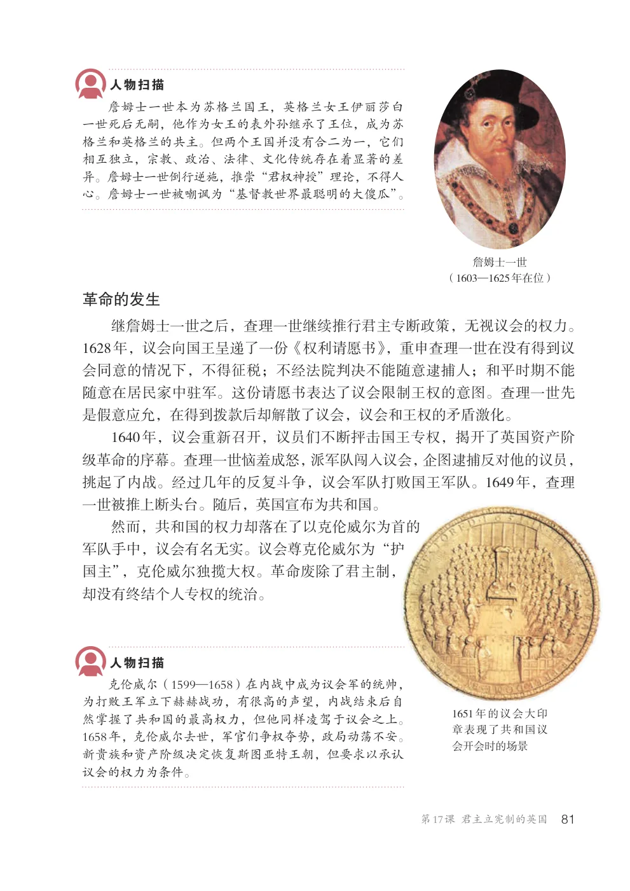
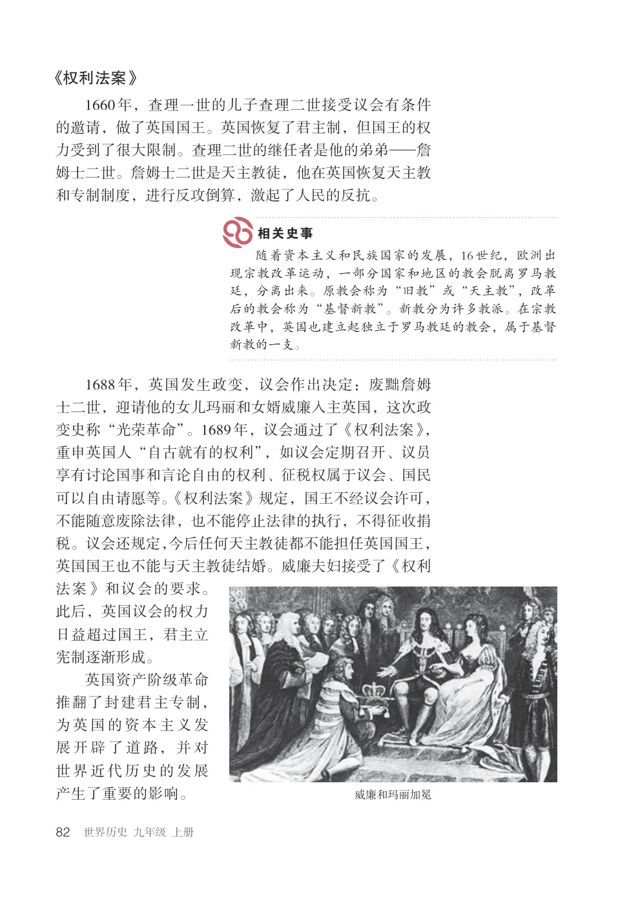
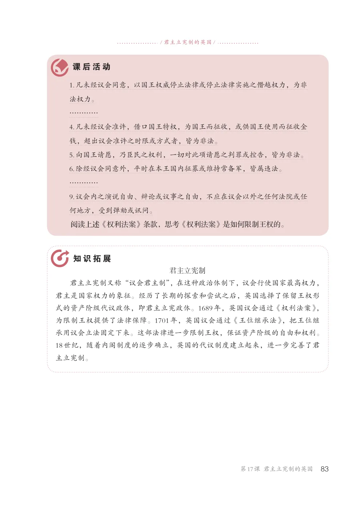
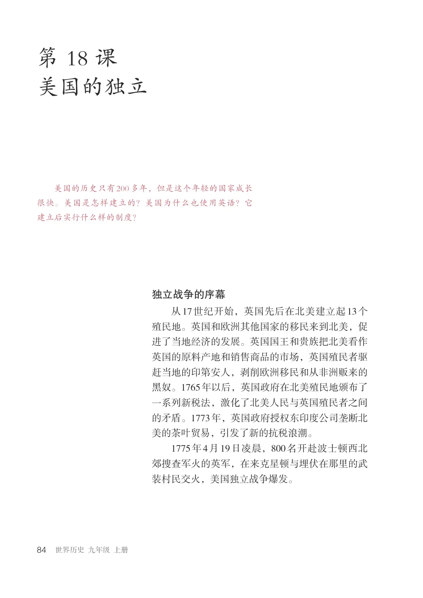
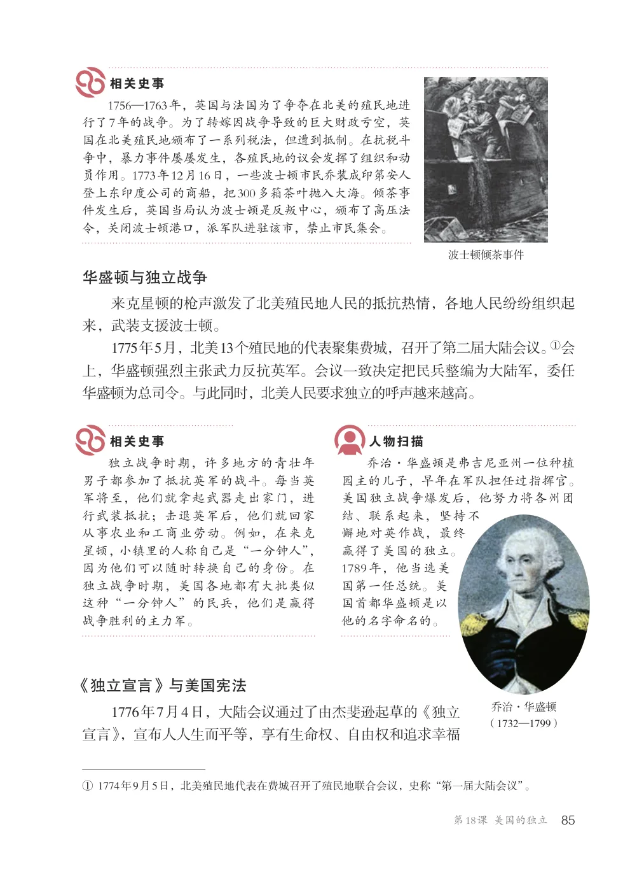
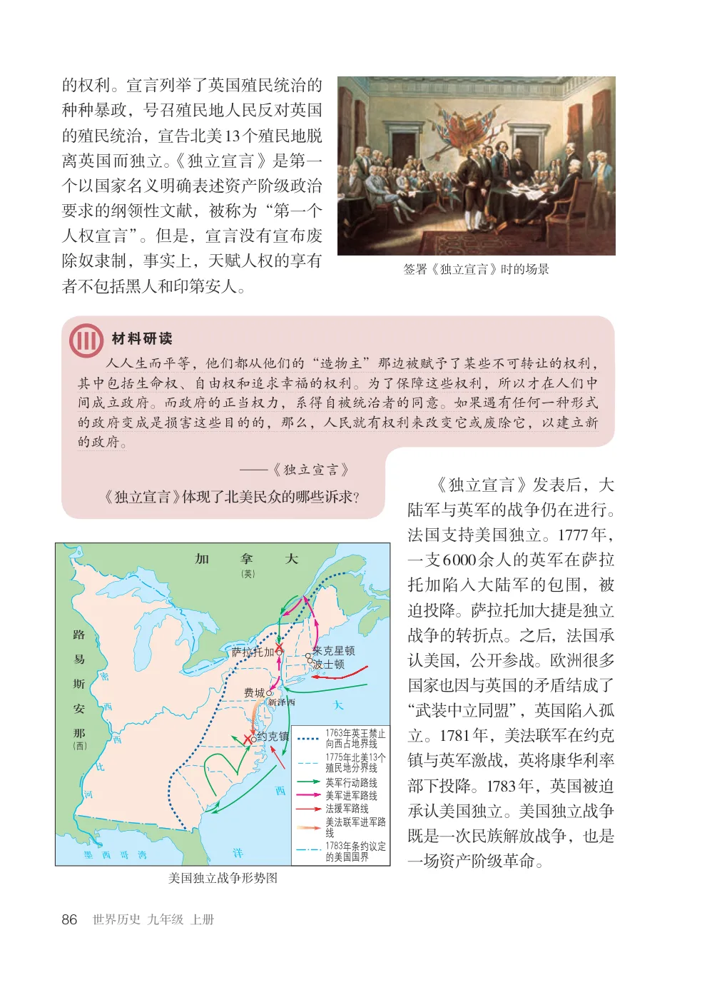
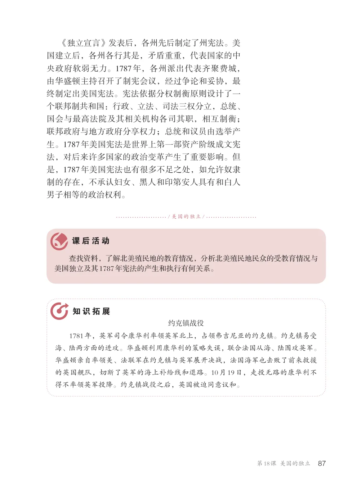
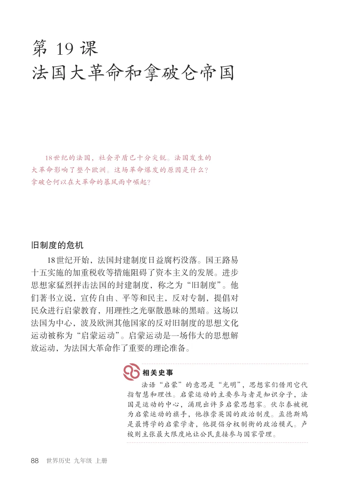
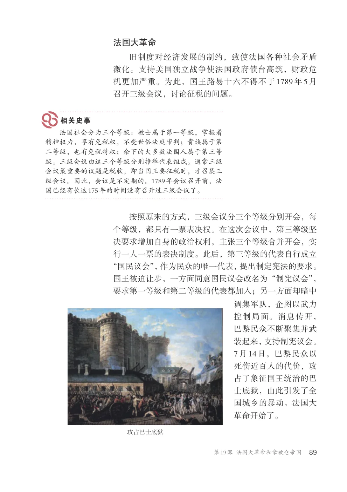
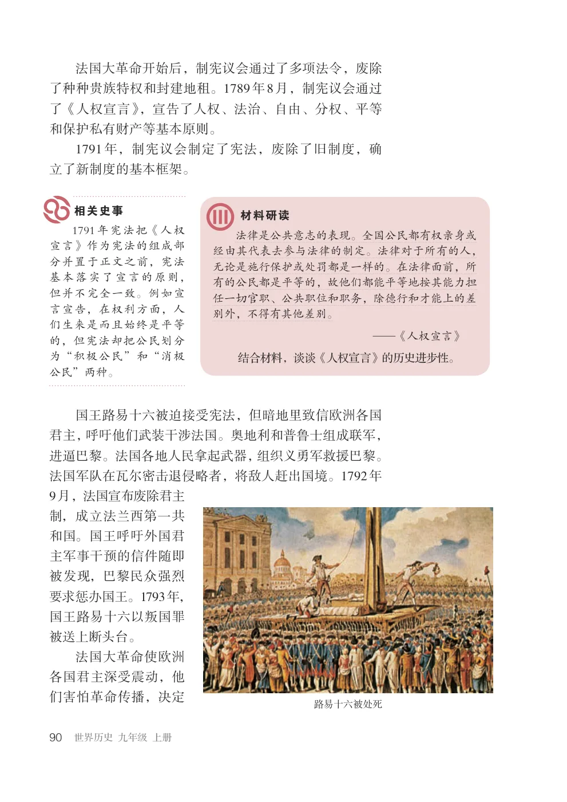
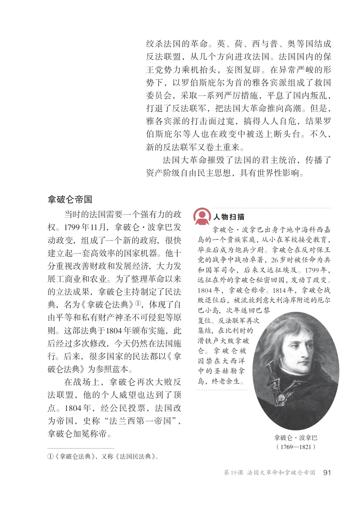
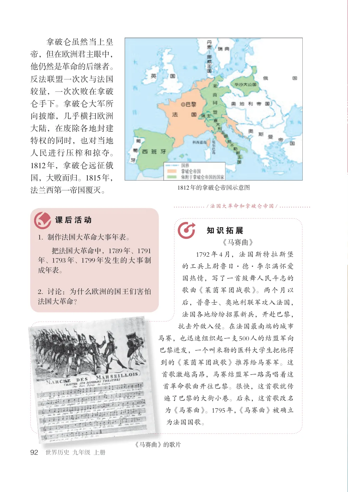